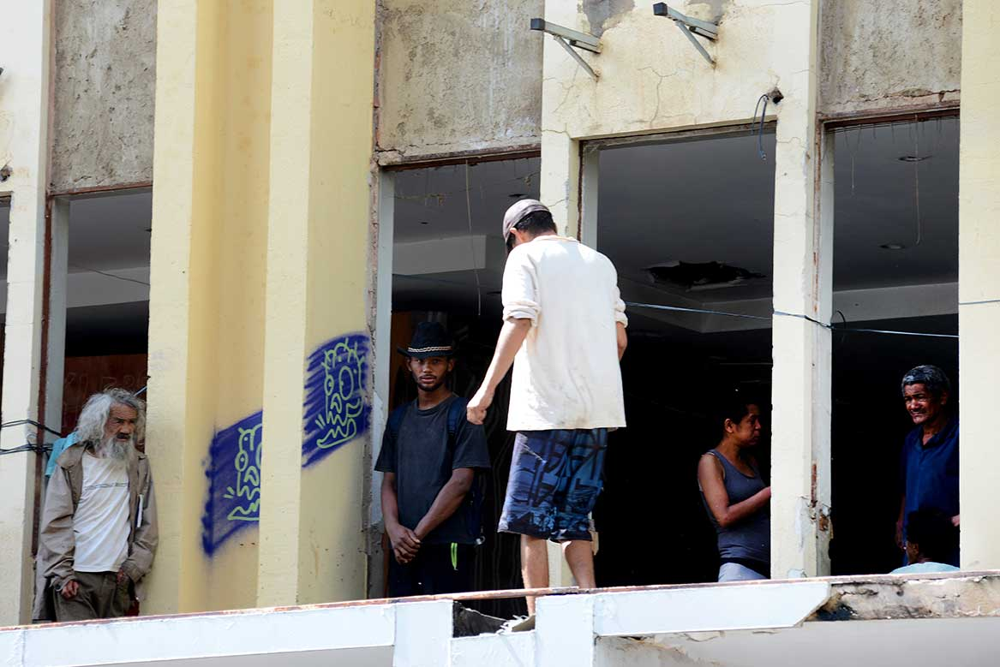
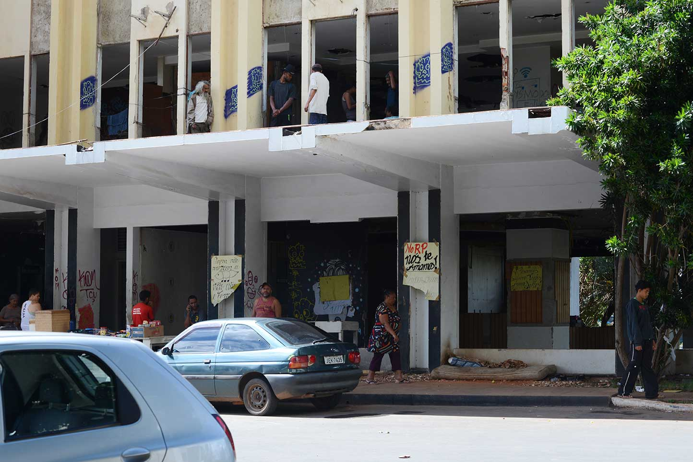

![]()
Aos olhos de quem quiser ver, uma cracolândia vertical se consolidou no centro da capital do país, desafiando as autoridades e expondo um drama social
No prédio do antigo Torre Palace, um hotel abandonado há quase três anos após conflitos entre os herdeiros do empreendimento, o uso e o tráfico de drogas acontecem livremente. A polícia sabe, mas alega nada poder fazer por se tratar de uma propriedade particular.
A 500 metros de uma delegacia e a 2,5 quilômetros da Esplanada dos Ministérios, o esqueleto do edifício virou uma espécie de bunker do tráfico que abastece o Plano Piloto, área nobre de Brasília.
Com a autorização de líderes do MRP (Movimento Resistência Popular), que desde outubro de 2015 ocupa do 4º ao 13º andar, a reportagem do Fato Online entrou no prédio com duas câmeras escondidas, no início da noite de uma terça-feira.
Naquele mesmo dia, um grupo de voluntários distribuía sopa e suco no estacionamento da construção, a primeira do Setor Hoteleiro Norte, erguida em 1973. Mesmo com a movimentação atípica, a rotina macabra seguia normalmente no que restou do Torre Palace.
Do mezanino ao 3º andar, em corredores e cômodos escuros, entre ratazanas, fezes, lixo e bastante entulho, homens e mulheres – a maioria com menos de 30 anos – sobrevivem como zumbis: descalços, trêmulos, com o corpo e as roupas sujos, e o olhar cada vez mais longe da realidade.
Como legítimos donos do espaço, traficantes montaram barricadas e restringiram o acesso ao prédio completamente depredado. Os montes de pedras, pneus, tapumes, correntes e cadeados são usados para se protegerem deles mesmos. A polícia nunca chegou até ali.
As imagens do vídeo abaixo mostram o momento em que o Fato Online subiu as escadas do Torre Palace, em formato de caracol e já sem proteção alguma. Foi a primeira vez que uma equipe de reportagem entrou na mais nova cracolândia de Brasília.
O local é escuro e a subida é tensa pela movimentação que a presença de "estranhos" provoca. Confira:
“Tamo de boa, deixa a gente aqui de boa”, é o que mais se consegue entender entre as vozes confusas que ecoam pelos corredores do prédio, sem portas ou janelas.
Em um quarto com cama e ligações elétricas clandestinas, que garantem a TV funcionando, a mulher apontada por integrantes do MRP como a principal traficante do Torre Palace se refugia no segundo andar acima do mezanino.
De boné para trás, top rosa e short jeans, ela abre a porta improvisada e sai da toca para mostrar as centenas de latinhas de alumínio acumuladas no cômodo à frente. “Trabalho vendendo latinha, meu trabalho é esse”, frisa ela, com um carregado sotaque baiano.
As latinhas, conforme apurou o Fato Online, servem de moeda de troca no jogo do tráfico: usuários as recolhem pelas ruas da Capital Federal e, na boca, as trocam por algumas gramas de crack. Enquanto isso, a traficante acumula o material sem sair do prédio e o vende para cooperativas de reciclagem, aumentando a receita.
Diferentemente da dinâmica de outra cracolândia consolidada no centro de Brasília, no chamado Buraco do Rato, no Setor Comercial Sul, o consumo e a comercialização do crack no Torre Palace zomba de maneira muito mais escrachada das forças de segurança. “Aqui, eles não podem entrar”, solta um dos moradores do prédio.
A Secretaria da Segurança Pública e da Paz Social do Distrito Federal informou que o Torre Palace é de propriedade particular e, por isso, os policiais não podem atuar no interior da construção. Em nota, o órgão acrescentou que uma eventual invasão só poderia ocorrer em caso de flagrantes ou de ordem judicial.
A Polícia Militar pontuou que monitora diariamente o Setor Hoteleiro Norte, “para evitar ocorrências de crimes, como o tráfico e o consumo de drogas”.
Cada pedra de crack vendida ou queimada no antigo Torre Palace escancara a inércia e a incompetência do Estado. Sem qualquer resistência, o tráfico de drogas dilacera vidas no prédio abandonado que se transformou em cracolândia no coração de Brasília
Ao acessar o edifício na segunda semana de 2016, o Fato Online conheceu histórias como a de um ex-caminhoneiro de 43 anos, que se afundou no crack sem nem saber por quê. Entre lágrimas, o homem implorou por ajuda “para não acabar morrendo”. Após a conversa, ele aceitou iniciar tratamento em uma clínica de reabilitação na Cidade Ocidental (GO), onde continuava internado até o fechamento desta reportagem.
No térreo, desconfiado, um jovem de 26 anos disse usar drogas desde os 16. De calça jeans, camisa polo e sapatênis, misturava-se aos que já se deixaram desfigurar pelo crack. “Logo, logo vai ficar igual aos outros”, previu, com lamento, o voluntário do grupo que, naquele dia, fazia ação social no estacionamento do Torre Palace.
Um dos frequentadores mais jovens da cracolândia vertical tem 21 anos e já foi expulso de uma clínica de recuperação por indisciplina. Atualmente, mora em um dos cômodos depredados do prédio que abrigou o hotel considerado um dos mais luxuosos de Brasília nas décadas de 1970 e 1980. Com a pele ressaltando os ossos, o usuário classifica o crack como a droga de sua preferência e afirma não ter o que temer. “Eu me cuido. Tomo banho quase todo dia, arrumo meu cabelo...”, justificou.
Às margens do Eixo Monumental, uma das avenidas mais famosas de Brasília, também conhecida como o “corpo do avião”, o prédio do Torre Palace está localizado em um ponto privilegiado. Não à toa, a boca ali instalada há quase três anos passou a abastecer usuários de toda a região central, de todas as classes sociais.
Líderes do MRP contaram – sem saber que estavam sendo filmados – ser comum carrões pararem em frente ao prédio para buscar drogas. “Eles já sabem e descem para entregar [a droga]”, relatou um dos integrantes do movimento. “Os filhinhos de papaizinho vêm todos aí”, emendou outro.

Um dos líderes do MRP, o Movimento Resistência Popular, que ocupa a maior parte do antigo hotel Torre Palace desde outubro de 2015, ameaça colocar fogo no prédio se a polícia decidir invadir, mesmo com autorização judicial
Em relato gravado pela reportagem do Fato Online com câmeras escondidas, o senhor de 62 anos revela que o grupo de invasores armazena 200 litros de gasolina no alto do edifício. O combustível, conta ele, seria usado para atear fogo em caso de tentativa de desocupação.
“Ela [a polícia] vai subir, mas vai machucar muita gente, porque vai ter fogo e eles [os policiais] vão ter que pular”, dispara o líder do MRP. Ainda segundo ele, o grupo – composto por dezenas de crianças – está preparado para morrer. “São muitos anos de luta”, justifica.
O MRP, cuja bandeira oficial é a luta pelo direito à moradia, é uma dissidência do MTST (Movimento dos Trabalhadores Sem Teto). Trata-se do mesmo grupo que, em 2015, ocupou o também abandonado hotel Saint Peter, no Setor Hoteleiro Sul, e o Clube Primavera, em Taguatinga, a 40 minutos do centro da capital. De ambos os espaços, as famílias acabaram sendo expulsas pelo governo local.
“Agora, não vamos sair”, adianta, nervoso, o mesmo líder gravado pelo Fato Online. Ele reclama da truculência da polícia e faz diversas críticas ao governador do Distrito Federal, Rodrigo Rollemberg (PSB). “Ele prometeu nos dar moradia e até agora nada.”
O diálogo do governo com o MRP praticamente se extinguiu depois que, em dezembro de 2015, a Polícia Civil prendeu pelo menos sete pessoas ligadas ao movimento, acusadas de extorsão. As investigações indicaram que o grupo se aproveitava financeiramente de famílias beneficiadas por auxílio-aluguel. Atualmente, os comandantes são um homem identificado como Flávio e o senhor que atende por “seu Zé”.
Os integrantes do MRP convivem harmoniosamente com os usuários e traficantes de crack, que chegaram bem antes deles ao Torre Palace. Os líderes do movimento social montaram, inclusive, um pequeno comércio no térreo do prédio – com balinhas, cigarros, água e alimentos básicos –, que atende, principalmente, esses moradores mais antigos.
O imbróglio que envolve a ocupação do antigo hotel se arrasta desde o primeiro semestre de 2013. Sem detalhar valores, a Agefis (Agência de Fiscalização do DF) informou que os proprietários do Torre Palace estão sendo multados todo mês pelo descumprimento de algumas ordens, como a interdição do espaço.
No início de 2014, circularam informações de que a incorporadora Brookfield havia comprado o lote, estimado em R$ 45 milhões. As negociações, porém, não se concretizaram, e o esqueleto do Torre Palace se manteve de pé. Por meio da assessoria, a empresa com sede em São Paulo confirmou que as conversas não foram adiante e que, sem acordo, a responsabilidade sobre o edifício continua sendo de exclusividade dos proprietários, ou seja, dos sete herdeiros do libanês Jibran El-Hadj, morto em 2000.
Por telefone, o advogado da família, Assis Simão Pereira Júnior, disse que “os processos para reintegração de posse do edifício estão em andamento” no TJDFT (Tribunal de Justiça do DF e Territórios). Ele acrescentou não ter autorização dos clientes para falar sobre os rumos do empreendimento, e jogou toda a responsabilidade para a polícia quando provocado a se posicionar sobre o fato de o espaço estar sendo utilizado por usuários e traficantes de drogas.
“Quem tem que cuidar disso é a polícia, não a gente. E a polícia tem autorização para entrar lá, sim. Como não? Se sabe que funciona [uma cracolândia], por que não entrou ainda? Ela [a polícia] tem o dever público de fazer isso. Não sou quem estou dizendo, é a própria lei. Não precisa de autorização coisa alguma”, comentou, antes de impor o fim da rápida conversa.
Em novembro de 2015, um juiz da 17ª Vara Cível de Brasília concedeu liminar determinando a imediata reintegração de posse do edifício, sob pena de multa de R$ 10 mil por dia de descumprimento. Em caso de resistência, o uso da força policial estaria autorizado. Três dias depois, no entanto, a decisão foi suspensa por “falta de informações no processo sobre os proprietários do local”.
A dimensão da cracolândia vertical no centro de Brasília espanta até quem já fez parte do submundo das drogas. O brasiliense José Henrique França, de 40 anos, ex-usuário de drogas que abriu uma casa de recuperação nos arredores da capital do país, esteve no prédio do Torre Palace na segunda semana de 2016 para “resgatar um paciente”

“Estou nesse ramo há quase oito anos, salvando vidas, e jamais vi algo tão tenebroso”, desabafou ao Fato Online o fundador da ONG Salve a Si, localizada na Cidade Ocidental (GO).
O paciente resgatado no Torre Palace tem 28 anos e, infelizmente, é uma entre tantas histórias de vida que definham em um prédio dominado pelo tráfico e onde a Polícia Militar do DF diz não poder entrar. Antes de se perder no crack, o jovem morava com a mãe e a avó em um apartamento da Asa Sul.
Na virada do ano, ele deu entrada em um hospital particular de Brasília com pneumonia crônica, consequência do uso contínuo da droga. Ficou 10 dias na UTI (Unidade de Terapia Intensiva). No dia em que recebeu alta, encheu o carro da família com bens “roubados” da residência e se mandou para as bocas já conhecidas dele.
Acionado pela avó desesperada, Rick – como é conhecido o fundador da Salve a Si – sabia onde encontrar o “paciente”. “O Torre Palace é hoje a maior boca de crack de Brasília”, define.
Autorizado por integrantes do MRP (Movimento Resistência Popular) – que ocupa do 4º ao 13º andar do prédio – e dos próprios traficantes, Rick conseguiu subir as escadas para procurar o usuário na mesma semana em que a família tentava, na Justiça, uma internação compulsória.
“Quando entrei no prédio, me deparei com uma mulher de uns 30 anos, grávida, completamente drogada, com um pano sobre a barriga, tampando uma facada. Havia muito sangue. E o rosto dela estava todo machucado”, relatou. “Foi uma cena terrível.”
O Samu (Serviço de Atendimento Móvel de Urgência) foi acionado naquela noite. Não se sabe se a grávida sobreviveu. O “paciente” que estava na mira de Rick foi encontrado e levado para uma clínica de recuperação, onde continuava internado até o fechamento desta reportagem.
Segundo líderes do MPR, as brigas entre usuários e traficantes são quase diárias no interior do Torre Palace, onde a polícia não chega perto. “Eles se esfaqueiam direto”, contou um deles.
Acidentes nos fossos dos elevadores, que estão sem qualquer proteção, são igualmente comuns. Em maio de 2015, o corpo de um homem foi encontrado no subsolo do Torre Palace. No fim do ano passado, um usuário caiu do segundo andar: enquanto todos achavam que ele também havia morrido, o acidentado levantou-se e, minutos depois, comprava mais droga no interior do prédio.
“Como ex-dependente de crack, não posso tolerar que exista no meio da Capital Federal uma cracolândia onde jovens usam drogas livremente porque nem a polícia nem agentes de saúde podem entrar. Isso é um absurdo, não faz o menor sentido. Alguém tem que dar um fim naquele lugar urgentemente”, sublinha Rick.
Em abril de 2015, o Fato Online contou a história de José Henrique França. Relembre aqui.
O Torre Palace, abandonado em função de uma disputa judicial entre herdeiros, se transformou na “cracolândia” de Brasília, principal ponto de venda e consumo de drogas.
Após a série de reportagens publicadas pelo Fato Online, mostrando o que aconteceu com um dos mais antigos hotéis da cidade, gerou uma série reações por parte da sociedade, das autoridades de Brasília e do governo federal. Acompanhe, a seguir, os principais desdobramentos do caso.

Cecília Maia
Diego Amorim
Sheila D'Amorim e Clovis Sousa
Fabrícia Gouveia
Sheyla Leal e Joel Rodrigues
Ramon Amorim, Hugo Carmelo e Vinícius Miranda
Alexandre Fonseca